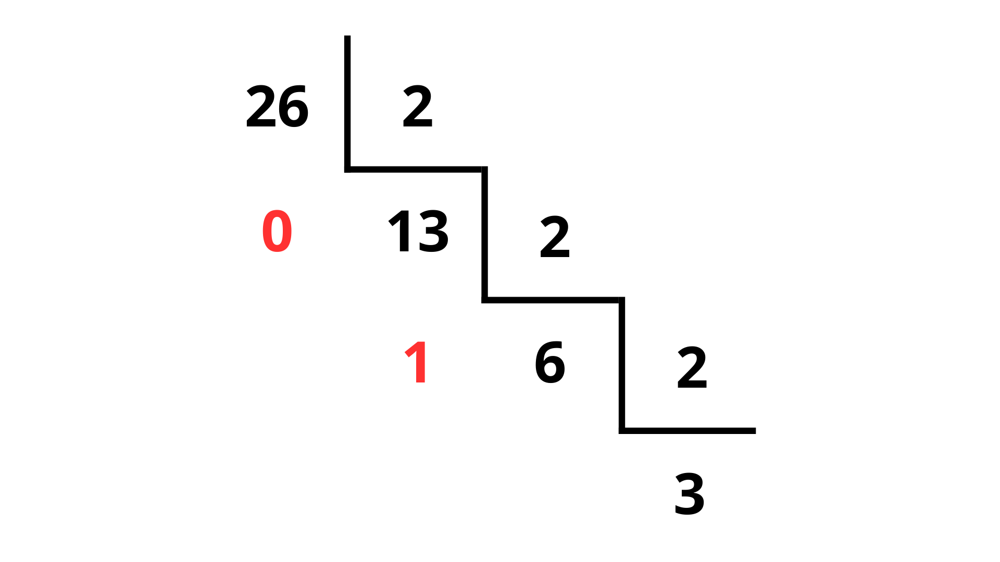
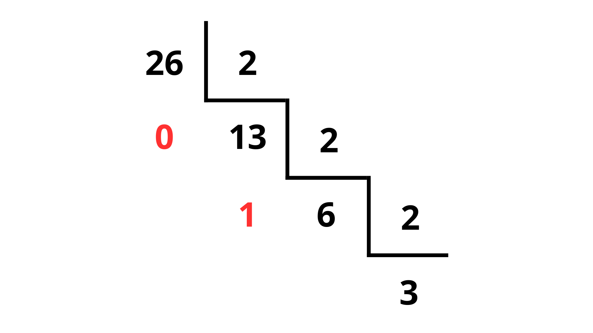

Manual de Conversão
Abaixo encontra-se o passo-a-passo para as conversões presentes na aplicação:
Decimal para Binário passo-a-passo
Movimente a barra de rolagem para ir ao próximo passo


 



Decimal para Octal passo-a-passo


Decimal para Hexadecimal passo-a-passo